전기산업기사 (2002-08-11 기출문제)
1과목: 전기자기학
1. 반지름 a인 원주 대전체에 전하가 균등하게 분포되어 있을 때 원주 대전체의 내외 전계의 세기 및 축으로 부터의 거리 와 관계되는 그래프는?
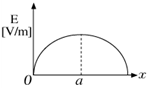
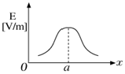
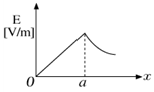
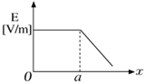
(정답률: 67%)

2. 두 유전체의 경계면에 대한 설명 중 옳지 않은 것은?
- 전계가 경계면에 수직으로 입사하는 두 유전체내의 전계의 세기는 같다.
- 경계면에 작용하는 맥스웰 변형력은 유전률이 큰 쪽에서 작은 쪽으로 끌려가는 힘을 받는다.
- 유전률이 작은 쪽에서 전계가 입사할 때 입사각은 굴절각 보다 작다.
- 전계나 전속밀도가 경계면에 수직으로 입사하면 굴절하지 않는다.
(정답률: 34%)
3. 그림과 같은 반지름 a[m]인 원형코일에 I[A]의 전류가 흐르고 있다. 이 도체 중심축상 X[m]인 P점의 자위는 몇 [A]인가?
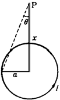
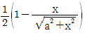
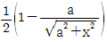
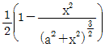
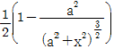
(정답률: 60%)
4. 전계 E = i3x2 + j2xy2 + kx2yz의 div E 는 얼마인가?
- -i6x + jxy + kx2y
- i6x + j6xy + kx2y
- -6x - 6xy -x2y
- 6x + 4xy + x2y
(정답률: 72%)
5. 1[uF]의 콘덴서를 30[KV]로 충전하여 200[Ω]의 저항에 연결하면 저항에서 소모되는 에너지는 몇[J] 인가?
- 450
- 900
- 1350
- 1800
(정답률: 63%)
6. 길이 1[cm]마다 권수 50을 가진 무한장 솔레노이드에 500[mA]의 전류를 흘릴 때 내부자계는 몇[AT/m] 인가?
- 1250
- 2500
- 12500
- 25000
(정답률: 73%)
7. 권수 3000회인 공심 코일의 자기인덕턴스는 0.06[mH]이다. 자기인덕턴스를 0.135[mH]로 하자면 권수는 몇 회로 하면 되는가?
- 3500
- 4500
- 5500
- 6750
(정답률: 35%)
8. 자계의 세기에 관계없이 급격히 자성을 잃는 점을 자기임계 온도 또는 큐리점(curie point)이라고 한다. 순철의 경우 이 온도는 약 몇[℃] 인가?
- 0
- 370
- 570
- 770
(정답률: 49%)
9. 비투자율 μs = 1000인 매질속에 길이가 무한대인 직선도체가 있다. 여기에 전류 I = 10[A]가 흐르고 있을 때 도체에서 수직거리 10[cm]떨어진 점의 자속밀도는 몇 Gauss 인가?
- 1
- 2
- 3
- 4
(정답률: 43%)
10. 환상 철심에 감은 코일에 5[A]의 전류를 흘리면 2000[AT] 의 기자력이 생기는 것으로 한다면, 코일의 권수는 얼마로 하여야 하는가?
- 100회
- 200회
- 300회
- 400회
(정답률: 80%)
11. 1[cm]당 권선수가 50인 무한길이 솔레노이드에 10[mA]의 전류가 흐르고 있을 때 솔레노이드 외부 자계의 세기는 몇 [AT/m] 인가?
- 0
- 5
- 10
- 50
(정답률: 47%)
12. 두 개의 저항 R1, R2를 직렬로 연결하면 16[Ω], 병렬 연결 하면 3.75[Ω]이 된다. 두 저항값은 각각 몇[Ω] 인가?
- 4와 12
- 5와 11
- 6과 10
- 7과 9
(정답률: 70%)
13. 내부저항 20[Ω] 및 25[Ω], 최대지시눈금이 다 같이 1[A]인 전류계 A1 및 A2를 그림과 같이 접속했을 때 측정할 수 있는 최대 전류의 값은 몇[A] 인가?
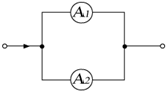
- 1
- 1.5
- 1.8
- 2
(정답률: 45%)
14.
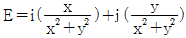
인 전계의 전기력선의 방정식을 옳게 나타낸 것은? (단,C는 상수이다.)- y = clnx
- y = c/x
- y = cx
- y = cx2
(정답률: 45%)
15. 내압과 용량이 각각 200[V] 5[㎌], 300[V] 4[㎌], 400[V] 3[㎌], 500[V] 3[㎌]인 4개의 콘덴서를 직렬 연결하고 양단에 직류전압을 가하여 전압을 서서히 상승시키면 최초로 파괴되는 콘덴서는 어느 것인가? (단, 콘덴서의 재질이나 형태는 동일한 것이어야 한다.)
- 200[V] 5[㎌]
- 300[V] 4[㎌]
- 400[V] 3[㎌]
- 500[V] 3[㎌]
(정답률: 78%)
16. 접지 구도체와 점전하사이에 작용하는 힘은?
- 항상 반발력이다.
- 항상 흡인력이다.
- 조건적 반발력이다.
- 조건적 흡인력이다.
(정답률: 82%)
17. 내구의 반지름이 a[m]이고, 외구의 반지름이 b[m], 외구반 지름이 c[m]인 두 개의 동심구 도체의 내구에 Q[C], 외구 에 -Q[C]의 전하를 주었다면 중심에서 r(＞c)[m]만큼 떨어진 도체밖의 점 P의 전계는 몇[V/m]인가?
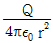
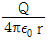
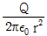
- 0
(정답률: 55%)
18. 자유공간의 고유임피이던스
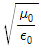
의 값은 몇[Ω]인가?- 60π
- 80π
- 100π
- 120π
(정답률: 73%)
19. 평행판콘덴서의 면적이 S[m2], 양단의 극판 간격이 d[m] 일 때 비유전률 εs인 유전체를 채우면 정전용량은 몇 [F] 인가? (단, 진공 중의 유전률은 εo이다.)
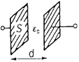
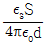
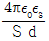
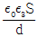
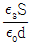
(정답률: 57%)
20. 자유공간에서방향으로 진행하는 평면 전자파로 옳지 않는 것은?
- 전파 및 자파의 z성분이 없다. (Ez = 0, Hz = 0)
- x에 관한 전파의 1차 도함수가 영이다. (∂E/∂x = 0)
- y에 관한 자파의 1차 도함수가 영이다. (∂H/∂y = 0)
- z에 관한 자파의 1차 도함수가 영이다. (∂E/∂z = 0)
(정답률: 44%)
2과목: 전력공학
21. 중성점 저항접지방식의 병행 2회선 송전선로의 지락사고 차단에 사용되는 계전기는?
- 과전류계전기
- 과전압계전기
- 거리계전기
- 선택접지계전기
(정답률: 68%)
22. 수전단전압 60000[V], 전류 200[A], 선로저항 7.61[Ω] 리액턴스 11.85[Ω]일 때 전압강하율은 몇[%]인가? (단, 수전단 역률은 0.8임)
- 6.61
- 7.62
- 8.42
- 9.43
(정답률: 43%)
23. 무손실 송전선로에서 송전할 수 있는 송전용량은? (단, Es : 송전단전압, ER : 수전단전압, δ : 부하각, X : 송전선로의 리액턴스, Y : 송전선로의 어드미턴스, R : 송전선로의 저항이다.)
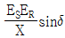
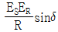
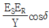
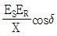
(정답률: 68%)
24. 발전소 원동기로 이용되는 가스터빈의 특징을 증기터빈과 내연기관에 비교하면?
- 평균효율이 증기터빈에 비하여 대단히 낮다.
- 기동시간이 짧고 조작이 간단하므로 첨두부하 발전에 적당하다.
- 냉각수가 비교적 많이 든다.
- 설비가 복잡하며, 건설비 및 유지비가 많고 보수가 어렵다.
(정답률: 56%)
25. 수전용량에 비해 첨두부하가 커지면 부하율은 그에 따라 어떻게 되는가?
- 낮아진다.
- 높아진다.
- 변하지 않고 일정하다.
- 부하의 종류에 따라 달라진다.
(정답률: 50%)
26. 우리나라에서 가장 많이 사용하는 현수애자의 표준은 몇 [mm] 인가?
- 160
- 250
- 280
- 320
(정답률: 57%)
27. 배전선로의 전기방식 중 전선의 중량이 가장 적게 소요되는 전기방식은? (단, 배전전압, 거리, 전력 및 선로손실 등은 같다고한다)
- 단상 2선식
- 단상 3선식
- 3상 3선식
- 3상 4선식
(정답률: 59%)
28. 5000[KVA], 역률 80[%]인 부하를 역률 95[%]로 개선하는데 필요한 전력용 콘덴서의 용량은 약 몇[KVA] 인가?
- 1350
- 1550
- 1690
- 1980
(정답률: 50%)
29. 전력선에 의한 통신선로의 전자유도 자아해의 발생요인은 주로 무엇 때문인가?
- 영상전류가 흘러서
- 부하전류가 크므로
- 전력선의 교차가 불충분하여
- 상호 정전용량이 크므로
(정답률: 72%)
30. 3[KV] 배전선로의 전압을 6[KV]로 승압하여 동일한 손실률로 송전할 때, 송전전력은 승압전의 몇 배가 되는가?
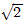
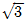
- 2
- 4
(정답률: 48%)
31. 발열량 5500Kcal/Kg의 석탄 10ton을 연소하여 2400KWh의 전력을 발생하는 화력발전소의 열효율은 약 몇[%]인가?
- 27.5
- 32.5
- 35.5
- 37.5
(정답률: 46%)
32. 이상전류가 흐른는 경우 투입과 차단을 모두 할 수 없는 것은?
- 차단기
- 단로기
- 퓨즈
- 접지스위치
(정답률: 52%)
33. 차단기의 정격투입전류는 정격차단전류(실효값)의 몇 배를 표준으로 하는가?
- 1.5
- 2.5
- 3.5
- 5
(정답률: 40%)
34. 설비용량이 3[KW]인 주택에서 최대 사용전력이 1.8[KW]일 때의 수용률은 몇[%]인가?
- 40
- 50
- 60
- 70
(정답률: 69%)
35. 서울과 같이 부하밀도가 큰 지역에서는 일반적으로 변전소의 수와 배전거리를 어떻게 결정하는 것이 좋은가?
- 변전소의 수를 감소하고 배전거리를 증가한다.
- 변전소의 수를 증가하고 배전거리를 감소한다.
- 변전소의 수를 감소하고 배전거리도 감소한다.
- 변전소의 수를 증가하고 배전거리도 증가한다.
(정답률: 70%)
36. 송전선로에서 역섬락을 방지하는 가장 유효한 방법은?
- 피뢰기를 설치한다.
- 가공지선을 설치한다.
- 소호각을 설치한다.
- 탑각 접지저항을 작게 한다.
(정답률: 68%)
37. 그림과 같은 단상 2선식 배전선로에서 부하단자전압 VR2[V]는? (단, r1 = 1[Ω], X1 = 2[Ω], r2 = 2[Ω], X2 = 4[Ω])
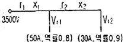
- 3241
- 3254
- 3347
- 3360
(정답률: 32%)
38. 송전단 전압, 전류를 각각 ES, IS수전단의 전압 전류를 각각 ER, IR이라 하고 4단자 정수를 A, B, C, D라 할 때 다음중 옳은 식은?
- ES = AER + BIR, IS = CER + DIR
- ES = CER + DIR, IS = AER + BIR
- ES = BER + AIR, IS = DER + CIR
- ES = DER + CIR, IS = BER + AIR
(정답률: 64%)
39. 표시선 계전방식이 아닌 것은?
- 전압반향방식(opposed voltage system)
- 방향비교방식(directional comparison system)
- 전류순환방식(circulating current system)
- 반송계전방식(carrier - pilot relay system)
(정답률: 46%)
40. 용량형 전압변성기 CPD의 장점이 아닌 것은?
- 공진을 이용하므로 주파수 특성이 좋다.
- 절연내량이 커서 계전기와 공용할 수 있다.
- 절연의 신뢰도가 높다.
- 고장이 나더라도 값싼 예비품으로 신속히 수리된다.
(정답률: 37%)
3과목: 전기기기
41. 병렬운전하는 두 동기 발전기 사이에 그림과 같이 동기 검정기가 접속되어 있을 때 상 회전 방향이 일치되어 있다면?
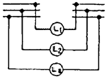
- L1, L2, L3 모두 어둡다.
- L1, L2, L3 모두 밝다.
- L1, L2, L3 순서대로 망멸한다.
- L1, L2, L3 모두 점등되지 않는다.
(정답률: 44%)
42. 슈라게 전동기의 특성과 가장 비슷한 직류전동기는?
- 분권 전동기
- 직권 전동기
- 차동복권 전동기
- 가동복권 전동기
(정답률: 51%)
43. 3300/210[V],5[KVA]의 단상 주상 변압기를 승압용 단권 변압기로 접속하고, 1차에 3000[V]를 가할때의 출력[KVA]은?
- 약 69
- 약 76
- 약 82
- 약 84
(정답률: 32%)
44. 분권정류자 전동기의 전압정류 계산법에 도움이 되지 않는 것은?
- 보상권선
- 보극설치
- 저저항리이드
- 저항브러시
(정답률: 63%)
45. 전기자 지름 0.2[m]의 직류발전기가 1.5[KW]의 출력에서 1800[rpm]으로 회전하고 있을때 전기자 주변속도[m/s]는?
- 18.84
- 21.96
- 32.74
- 42.85
(정답률: 60%)
46. 직류직권 전동기를 단상 정류자 전동기로 사용하기 위하여 류를 가했을 때 발생하는 문제점을 열거한 것이다. 이 중에서 틀린 것은?
- 철손이 크다.
- 계자권선이 필요없다.
- 역률이 나쁘다.
- 정류가 불안하다.
(정답률: 56%)
47. 동기 전동기의 난조 방지에 가장 유효한 방법은?
- 자극수를 적게 한다.
- 회전자의 관성을 크게 한다.
- 자극면에 제동권선을 설치한다.
- 동기리액턴스를 작게 하고 동기화력을 크게 한다.
(정답률: 74%)
48. 4극 7.5[KW], 200[V], 50[Hz]의 3상 유도전동기가 있다. 전부하에서 2차 입력이 7950[W]이다. 이 경우의 2차 효율은 약 몇[%]인가? (단, 여기서 기계손은 130[W]이다.)
- 94
- 95
- 96
- 97
(정답률: 56%)
49. 무부하 운전중의 동기전동기에 일정부하를 거는 경우에 발생하는 속도 N의 변화를 나타내는 곡선은?
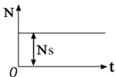
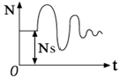
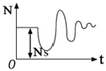
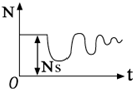
(정답률: 38%)
50. 유도 전동기의 속도 제어법이 아닌 것은?
- 2차 저항법
- 2차 여자법
- 1차 저항법
- 주파수 제어법
(정답률: 57%)
51. 변압기의 결선중에서 6상측의 부하가 수은정류기일 때 주로 사용되는 결선은?
- 포오크 결선(fork connection)
- 환상 결선 (ring connection)
- 2중3각 결선(double star connection)
- 대각 결선(diagomal connection)
(정답률: 42%)
52. 자기용량 20[KVA]의 단권변압기를 사용하여 배전선 전압 6000[V]를 6600[V]로 승압할 때 역률 80[%]의 부하 몇 [KW]까지 걸 수 있는가?
- 220
- 196
- 176
- 156
(정답률: 41%)
53. 그림은 3상 유도전동기의 1차에 환산한 1상당 등가회로이다.2차 저항은 r2 = 0.02[Ω], 2차 리액턴스 x2 = 0.06[Ω]이다. 슬립 5[%] 일 때 등가 부하저항 R의 값은? (단, 권수비 a=4, 상수비 B=1 이다.)
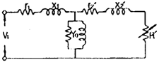
- 4.23[Ω]
- 6.08[Ω]
- 7.25[Ω]
- 8.22[Ω]
(정답률: 36%)
54. 1차 권선수 N1, 2차 권선수 N2, 1차 권선계수 kw1, 2차 권선계수 kw2인 유도전동기가 슬립 S로 운전하는 경우 전압비는?
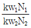
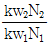
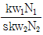
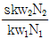
(정답률: 54%)
55. 정격이 같은 2대의 단상 변압기 1000[KVA]의 임피던스 전압은 8[%]와 9[%]이다. 이 2대를 병렬운전하여 몇 [KVA]의 부하를 걸 수 잇는가?
- 1888
- 2988
- 3688
- 4888
(정답률: 35%)
56. 직류발전기의 병렬운전에서 균압모선을 필요로 하지 않는 것은?
- 분권 발전기
- 직권 발전기
- 평복권 발전기
- 과복권 발전기
(정답률: 46%)
57. 단상 50[Hz], 전파 정류회로에서 변압기의 2차 상전압 100[V], 수은 정류기의 전호강하 15[V]에서 회로중의 인덕턴스는 무시한다. 외부 부하로서 기전력 60[V], 내부저항 0.2[Ω]의 축전지를 연결할 때 평균출력 [W]은?
- 5625
- 7425
- 8385
- 92⑤
(정답률: 26%)
58. 전부하에서 동손 100[W], 철손 50[W]인 변압기가 최대 효율을 나타내는 부하 [%]는?
- 70
- 114
- 149
- 186
(정답률: 45%)
59. 6극 슬롯수 54의 동기기가 있다. 전기자 코일은 제 1슬롯 과 제 9슬롯에 연결된다고 한다. 기본파에 대한 단절권계수는?
- 약 0.342
- 약 0.981
- 약 0.985
- 약 1.0
(정답률: 36%)
60. 정격이 300[KVA], 6600/2200[V]의 단권변압기 2대를 V결선으로 해서 1차에 6600[V]를 가하고 전부하를 걸었을 때의 2차측 출력 [KVA]은? (단, 손실은 무시한다.)
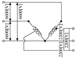
- 약 519
- 약 487
- 약 425
- 약 390
(정답률: 16%)
4과목: 회로이론
61. R[Ω]인 3개의 저항을 같은 전원에 △결선으로 접속시킬 때와 Ｙ결선으로 접속시킬 때 선전류의 크기 비는?
- 1/3
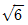
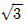
- 3
(정답률: 28%)
62. R1, R2 저항 및 인덕턴스 L의 직렬회로가 있다. 이 회로의 시정수는?
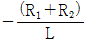
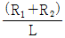
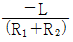
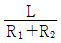
(정답률: 62%)
63. 주기함수 Fourier의 급수에 의한 전개에서 옳게 전개한 f(t)는?
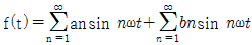
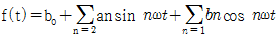
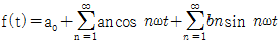
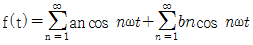
(정답률: 55%)
64. 전장 중에 단위 정전하를 놓을 때 여기에 작용하는 힘과 같은 것은?
- 전하
- 전위
- 전속
- 전장의 세기
(정답률: 44%)
65. 비정현파의 이그러짐의 정도를 표시하는 양으로서 왜형률이란?
- 평균치/실효치
- 실효지/최대치
- 고조파만의 실효치/기본파의 실효치
- 기본파의 실효치/고조파만의 실효치
(정답률: 65%)
66. 4단자 정수 A = 5/2, B = 800, C = 1/450, D = 5/3일 때 전달정수 θ는?
- loge5
- loge4
- loge3
- loge2
(정답률: 37%)
67. 그림과 같은 회로에 있어서 스위치 S를 닫을 때 단자 I, I'에 발생하는 전압은?
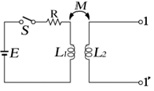
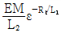
(정답률: 28%)
68. 정전용량 C만의 회로에 100[V], 60[Hz]의 교류를 가하니 60[㎃]의 전류가 흐른다. C는 얼마인가?
- 5.26[㎌]
- 4.32[㎌]
- 3.59[㎌]
- 1.59[㎌]
(정답률: 56%)
69. 그림과 같은 회로의 전달함수는? (단, ei는 입력, eo는 출력신호이다.)
(정답률: 51%)
70. 3상3선식 회로에서 일 때 정상분 전압[V]은?
- 7.81∠77°
- 2.37∠43°
- 0.33∠37°
- 0
(정답률: 30%)
71. 3상 불평형 전압에서 역상전압이 10[V], 정상전압이 50[V] 영상전압이 200[V]라고 한다. 전압의 불평형은 얼마인가?
- 0.1
- 0.⑤
- 0.2
- 0.5
(정답률: 51%)
72. 최대눈금이 50[V]인 직류전압계가 있다. 이 전압계를 써서 150[V]의 전압을 측정하려면 몇[Ω]의 저항을 배율기로 사용하여야 되는가? (단, 전압계의 내부저항은 5000[Ω]이다.)
- 1000
- 2500
- 5000
- 10000
(정답률: 40%)
73. 그림과 같은 회로에서 출력전압 V2의 위상은 입력 전압 V1보다 어떠한가?
- 뒤진다.
- 앞선다.
- 전압과 관계없다.
- 같다.
(정답률: 47%)
74. 저항과 리액턴스의 직렬 회로에 E = 14+j38[V]인 교류전압을 가하니 i = 6+j2[A]의 전류가 흐른다. 이 회로의 저항과 리액턴스는 얼마인가?
- R = 4[Ω], XL = 5[Ω]
- R = 5[Ω], XL = 4[Ω]
- R = 6[Ω], XL = 3[Ω]
- R = 7[Ω], XL = 2[Ω]
(정답률: 58%)
75. 이라 하면 이의 역변환은?
- aeAt
- Aeat
- ae-At
- Ae-at
(정답률: 62%)
76. 인덕턴스 L = 50[mH]의 코일에 Io = 200[A]의 직류를 흘려 급히 그림과 같이 용량 C = 20[uF]의 콘덴서에 연결할 때 회로에 생기는 최대전압 [KV]는?
- 10
- 20
(정답률: 31%)
77. △결선된 부하를 Ｙ결선으로 바꾸면 소비전력은 어떻게 되겠는가? (단, 선간전압은 일정하다.)
- 1/3배
- 1/9배
- 3배
- 9배
(정답률: 65%)
78. i = 2t2+8t[A]로 표시되는 전류를 도선에 3[sec] 동안 흘렸을 때 통과한 전 전기량은 몇 [C]인가?
- 18
- 48
- 54
- 61
(정답률: 43%)
79. 리액턴스 2단자 회로망의 임피던스 함수 Z(jω)를 Z(jω) = jX(ω)라 놓을 때 는 어떻게 되는가?
(정답률: 41%)
80. 비선형 저항에서 단자전압의 파형과 여기에 흐르는 전류의 파형은 일반적으로 어떠한가?
- 동일하다.
- 전혀 다르다.
- 닯은꼴이 된다.
- 파형은 같으나 위상차가 있다.
(정답률: 28%)
5과목: 전기설비기술기준 및 판단 기준
81. 방전등용 변압기의 2차단락전류나 관등회로의 동작전류가 몇 [㎃]인 방전등을 시설하는 경우 방전등용 안정기의 외함 및 방전등용 전등기구의 금속제 부분에 옥내 방전등공사의 접지공사를 하지 않아도 되는가? (단, 방전등용 안정기를 외함에 넣고 또한 그 외함과 방전 등용 안정기을 넣을 방전등용 전등기구를 전기적으로 접속하지 않도록 시설한다고 한다.)
- 25
- 50
- 75
- 100
(정답률: 41%)
82. 강색차선의 궤조면상의 높이는 터널내, 교량 아래 기타이와 유사한 곳에 시설하는 경우, 최소 몇[m] 이상으로 할 수 있는가?
- 2.5
- 3.0
- 3.5
- 4.0
(정답률: 32%)
83. 지중전선로에 사용되는 전선은?
- 절연전선
- 동복강선
- 케이블
- 나경동선
(정답률: 66%)
84. 전기집진장치에서 변압기로부터 정류기에 이르는 케이블을 넣는 방호장치의 금속제 부분 및 케이블의 피복에 사용되는 금속체에는 원칙적으로 몇 종 접지공사를 하여야 하는가?
- 제1종 접지공사
- 제2종 접지공사
- 제3종 접지공사
- 특별 제3종 접지공사
(정답률: 26%)
85. 지중전선로를 차도에 직접 매설식으로 시설하는 경우 매설 깊이는 몇 [m]이상으로 하는가?(오류 신고가 접수된 문제입니다. 반드시 정답과 해설을 확인하시기 바랍니다.)
- 1.0
- 1.2
- 1.5
- 2.0
(정답률: 46%)
86. 애자사용공사에 의한 고압 옥내배선공사를 할 때 전선의 지지점간의 거리는 몇 [m]이하로 하여야 하는가? (단, 전선은 조영재의 면을 따라 붙였다고 한다.)
- 2
- 3
- 4
- 5
(정답률: 37%)
87. 이상시 상정하중이 가하여지는 경우의 그 이상시 상정하중에 대한 철탑의 기초에 대한 안전율은 얼마 이상이어야 하는가?
- 1.2
- 1.33
- 1.5
- 2
(정답률: 41%)
88. 가공전선로의 지지물에 취급자가 오르고 내리는데 사용하는 발판못 등은 지표상 몇 [m]미만에 시설하여서는 아니되는가?
- 1.2
- 1.5
- 1.8
- 2.0
(정답률: 70%)
89. 특별고압 가공전선로에서 단주를 제외한 철탑의 경간은 몇 [m]이하로 하여야 하는가?
- 400
- 500
- 600
- 700
(정답률: 64%)
90. 사용전압이 35000[V]이하인 특별고압 가공전선이 건조물과 제2차 접근상태로 시설되는 경우에 특별고압 가공전선로는 어떤 보안공사를 하여야 하는가?
- 제1종 특별고압 보안공사
- 제2종 특별고압 보안공사
- 제3종 특별고압 보안공사
- 제4종 특별고압 보안공사
(정답률: 54%)
91. 전력보안 통신설비인 무선통신용 안테나 또는 반사판을 지지하는 철주, 철근콘코리트주 또는 철탑의 기초의 안전율은 얼마 이상이어야 하는가?
- 1.0
- 1.2
- 1.5
- 2.0
(정답률: 54%)
92. 폭연성 분진이 많은 장소의 저압 옥내배선에 적합한 배선 공사방법은?
- 금속관공사
- 애자사용공사
- 합성수지관공사
- 캡타이어케이블공사
(정답률: 68%)
93. 합성수지몰드공사에 의한 저압 옥내배선의 시설방법으로 옳지 못한 것은?
- 합성수지몰드는 홈의 폭 및 깊이가 3.5[cm] 이하의 것이어야 한다.
- 전선은 옥외용 비닐 절연전선을 제외한 절연전선이어야 한다.
- 합성수지몰드 상호간 및 합성수지몰드와 박스 기타의 부속품과는 전선이 노출되지 않도록 접속한다.
- 합성수지몰드 안에는 접속점을 1개소까지 허용한다.
(정답률: 39%)
94. 전로의 중성점 접지의 목적으로 볼 수 없는 것은?
- 대지전압의 저하
- 이상전압의 억제
- 손실전력의 감소
- 보호장치의 확실한 동작의 확보
(정답률: 48%)
95. 고압 또는 특별고압의 전로 중에서 기계 기구 및 전선을 보호하기 위하여 필요한 곳에 시설하는 것은?
- 피뢰기
- 과전류차단기
- 보안기
- 리액터
(정답률: 54%)
96. 가로등, 경기장, 공장, 아파트 단지 등의 일반조명을 위하여 시설하는 고압 방전등은 그 효율이 몇 [lm/W]이상의 것이어야 하는가?
- 30
- 50
- 70
- 100
(정답률: 58%)
97. 최대사용전압이 7[KV]를 넘고 25[KV]이하인 중성선을 다중 접지하는 전로의 절연내력시험전압은 최대사용전압의 몇 배인가?
- 0.92
- 1.1
- 1.25
- 1.5
(정답률: 46%)
98. 관등회로라고 하는 것은?
- 분기점으로부터 안정기까지의 전로를 말한다.
- 스위치로부터 방전등까지의 전로를 말한다.
- 스위치로부터 안정기까지의 전로를 말한다.
- 방전등용 안정기로부터 방전관까지의 전로를 말한다.
(정답률: 60%)
99. 발전기, 변압기, 조상기, 모선 또는 이를 지지하는 애자는 단락전류에 의하여 생기는 어느 충격에 견디이어야 하는가?
- 기계적 충격
- 철손에 의한 충격
- 동손에 의한 충격
- 열적 충격
(정답률: 61%)
100. 저압가공전선과 고압가공전선을 동일 지지물에 시설하는 경우 이격거리는 몇 [cm]이상이어야 하는가?
- 50
- 60
- 70
- 80
(정답률: 36%)